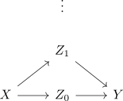
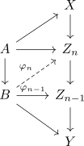

lifting of cw inclusion against serre fibration and moore postnikov
Proposition
Let $A \hookrightarrow B$ be a CW-inclusion, $f: X \rightarrow Y$ a serre fibration and

a lifting problem.
Let

be a Moore-Postnikov tower where $Z_n \rightarrow Z_{n-1}$ is a serre fibration
TFAE:
- there exists a lift of
- We can inductively solve the lifting problem
